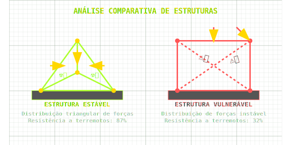
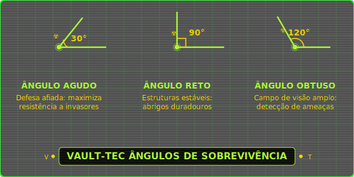
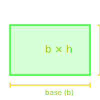
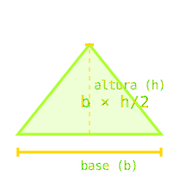
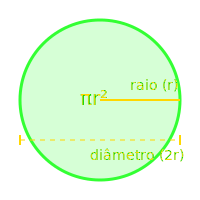
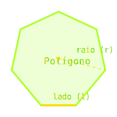
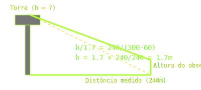

Planejamento de Estruturas
Sistema S.A.F.E. - Structural Analysis For Endurance
As estruturas na wasteland precisam resistir a condições extremas
e otimizar recursos.

Triangulação
Distribui forças uniformemente
Pontos de Ancoragem
Essenciais para estabilidade
Áreas de Tensão
Vulneráveis a colapso
Ângulos e Retas: Fundamentos de Construção
Diferentes tipos de ângulos têm aplicações estratégicas na
wasteland:

\( \text{Ângulo apropriado} \Rightarrow \text{sobrevivência otimizada} \)
Triângulos e as Estruturas da Wasteland
Triângulo Retângulo
- Um ângulo exatamente 90°
- Teorema de Pitágoras aplicável: \( c^2 = a^2 + b^2 \)
- Ideal para estruturas com reforço perpendicular
- Encontrado em: suportes de torre, esquinas de abrigos
Triângulo Isósceles
- Dois lados com mesmo comprimento
- Dois ângulos iguais (base dos lados iguais)
- Simetria útil para distribuição de peso
- Encontrado em: tendas, coberturas A-frame, telhados
Triângulo Escaleno
- Todos os lados com comprimentos diferentes
- Todos os ângulos diferentes
- Adaptável a terrenos irregulares
-
Encontrado em: estruturas improvisadas, adaptações de campo
Retângulos: Espaços Habitáveis Eficientes
Formas retangulares são ideais para estruturas habitáveis e
modularidade no design.

\( A = b \cdot h \)
\( P = 2b + 2h \)
\( d = \sqrt{b^2 + h^2} \)
- Moradias e barracas (cálculo de materiais)
- Plantações (maximização de área)
- Perímetros defensivos (cálculo de cercas)
O retângulo é a forma mais eficiente para construções habitáveis,
permitindo modularidade e expansão planejada.
Triângulos: Áreas e Eficiência Estrutural
Cálculos de área para projetar coberturas, tendas e barreiras
triangulares.

\( A = \frac{b \cdot h}{2} \)
\( P = a + b + c \)
\( s = \frac{a+b+c}{2} \)
\( A = \sqrt{s(s-a)(s-b)(s-c)} \)
- Tendas e coberturas (cálculo de lona necessária)
- Estruturas de suporte (triangulação)
Círculos: Zonas de Proteção Otimizadas
A forma circular oferece a máxima área para um perímetro dado -
ideal para zonas de segurança.

\( A = \pi r^2 \)
\( C = 2\pi r \)
\( d = 2r \)
- Zonas de radiação (mapeamento de áreas)
- Perímetros defensivos (eficiência máxima)
- Alcance de torres de comunicação
- Tanques de água (capacidade máxima)
Polígonos Regulares: Assentamentos Planejados
Formas poligonais combinam as vantagens práticas do retângulo com
a eficiência do círculo.

Fórmulas para n lados
\( P = n \cdot l \)
\( A = \frac{1}{4}nl^2 \cot\left(\frac{\pi}{n}\right) \)
\( \alpha_{\text{interno}} = \frac{(n-2)\cdot 180^\circ}{n} \)
\( l = 2r \sin\left(\frac{\pi}{n}\right) \)
- Planejamento de assentamentos
- Fortificações de múltiplos lados
- Sistemas de irrigação eficientes
Semelhança de Triângulos: Reconhecimento à Distância
A semelhança é uma arma poderosa para calcular distâncias
inacessíveis na wasteland.
Aplicação na Wasteland
-
Calcular a altura de um prédio perigoso sem aproximação
-
Estimar distâncias até bases inimigas ou pontos de recursos
-
Determinar a largura de áreas radioativas sem entrar nelas
-
Mapear terrenos inacessíveis a partir de pontos seguros
Critérios de Semelhança
-
AAA: Três ângulos iguais
\( (\alpha = \alpha,\ \beta = \beta,\ \gamma = \gamma) \)
-
LAL: Dois lados
proporcionais e ângulo entre eles igual
-
LLL: Três lados
proporcionais \( \left(\frac{AB}{AD} = \frac{BC}{DE} = \frac{AC}{AE}\right) \)
\( k = \frac{\text{lado correspondente}}{\text{lado correspondente}} \)
Aplicações na Wasteland: Reconhecimento Tático

Aplicações cruciais para sobrevivência na wasteland:
-
Calcular altura de torres e estruturas perigosas a uma distância
segura
-
Estimar distância de alvos hostis (Super Mutantes, Deathclaws)
-
Determinar a largura de rios ou áreas radioativas sem precisar
cruzá-los
- Mapear zonas inaccessíveis observando de pontos elevados